工作节点加入
K8s Node节点配置
一、节点基础信息与IP规划
- 系统版本：CentOS 7.5 (1804)
- Master节点IP：192.168.126.132（k8smaster）
- Node1节点IP：192.168.126.133（k8snode1）
- Node2节点IP：192.168.126.134（k8snode2）
- 网络段：192.168.126.0/24
二、Node节点核心配置步骤
2.1 配置主机名解析（关键：保证Node能访问Master）
先查看Master节点的hosts配置，对应修改Node节点的hosts文件，实现节点间互通：
# 1. 查看Master节点hosts配置（可在Master节点执行）
cat /etc/hosts
# 2. 在Node节点编辑hosts文件
vim /etc/hosts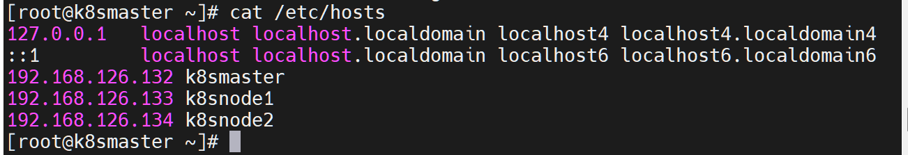
在Node节点hosts文件中添加以下内容（与Master保持一致）：
192.168.126.132 k8smaster
192.168.126.133 k8snode1
192.168.126.134 k8snode2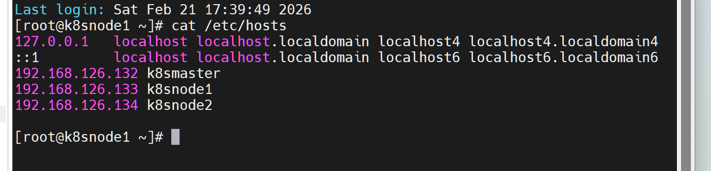
验证：Node节点ping Master节点，确保网络通畅：
ping k8smaster✅ 验证结果：显示数据包正常接收，0%丢包，即为解析配置成功。
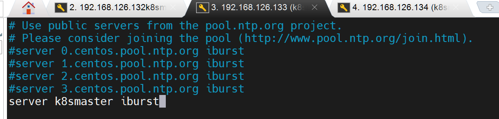
2.2 配置Node节点静态IP
修改网卡配置文件，设置静态IP（与规划IP一致）：
# 编辑网卡配置文件
vim /etc/sysconfig/network-scripts/ifcfg-ens33
# 重启网络服务使配置生效
systemctl restart network核心配置参数（需根据自身节点IP修改）：
- IPADDR=192.168.126.133（k8snode1）/ 192.168.126.134（k8snode2）
- NETMASK=255.255.255.0
- GATEWAY=192.168.126.2（根据自身网关修改）
- DNS1=8.8.8.8
- ONBOOT=yes
- BOOTPROTO=static
2.3 关闭防火墙
K8s集群节点间需大量端口通信，关闭防火墙避免拦截：
# 立即关闭防火墙
systemctl stop firewalld
# 禁止防火墙开机自启
systemctl disable firewalld✅ 验证结果：执行systemctl status firewalld，显示inactive (dead)即为关闭成功。
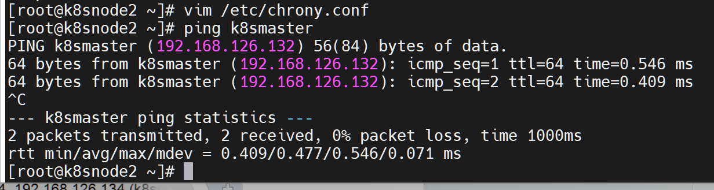
2.4 关闭SELinux
SELinux会限制容器资源访问，永久关闭避免集群运行异常：
# 临时关闭SELinux（当前会话生效）
setenforce 0
# 永久关闭SELinux（重启生效）
sed -i 's/SELINUX=enforcing/SELINUX=disabled/' /etc/selinux/config✅ 验证结果：执行getenforce，返回Permissive即为临时关闭成功，重启后返回Disabled为永久关闭成功。
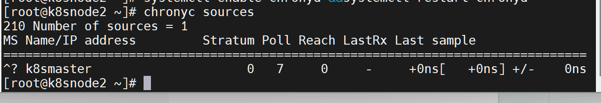
2.5 配置iptables默认策略
清空现有iptables规则，设置默认策略为接受，避免影响集群通信：
# 清空filter表规则
iptables -F
# 设置INPUT链默认策略为接受
iptables -P INPUT ACCEPT
# 清空nat表规则
iptables -t nat -F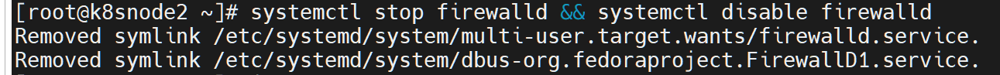
2.6 优化内核参数（适配K8s）
配置K8s所需内核参数，开启网桥转发、IP转发等功能：
# 创建k8s内核参数配置文件
cat > /etc/sysctl.d/k8s.conf << EOF
net.bridge.bridge-nf-call-ip6tables = 1
net.bridge.bridge-nf-call-iptables = 1
net.ipv4.ip_forward = 1
vm.swappiness = 0
EOF
# 加载网桥内核模块
modprobe br_netfilter
# 使内核参数立即生效
sysctl --system✅ 验证结果：执行sysctl --system后无报错，且返回配置的4个参数值均为1/0，即为生效。
2.7 配置IPVS模式
配置IPVS内核模块自加载，提升kube-proxy转发性能：
# 创建模块加载脚本
cat <<EOF > /etc/sysconfig/modules/ipvs.modules
#!/bin/bash
modprobe -- ip_vs
modprobe -- ip_vs_rr
modprobe -- ip_vs_wrr
modprobe -- ip_vs_sh
modprobe -- nf_conntrack_ipv4
EOF
# 为脚本添加执行权限
chmod +x /etc/sysconfig/modules/ipvs.modules
# 立即执行脚本加载模块
/bin/bash /etc/sysconfig/modules/ipvs.modules验证模块加载状态：
lsmod | grep -e ip_vs -e nf_conntrack_ipv4✅ 验证结果：输出ip_vs、ip_vs_rr等相关模块信息，即为加载成功。
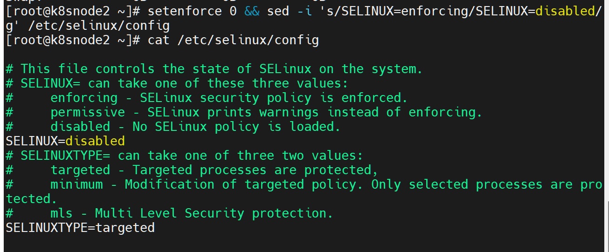
2.8 配置时间同步（指向Master节点）
K8s集群各节点时间必须一致，使用chrony实现Node节点同步Master节点时间：
2.8.1 安装chrony工具
yum install chrony -y2.8.2 修改chrony配置文件
vim /etc/chrony.conf编辑文件，保留/添加以下核心配置（注释默认公共时间源）：
# 指向Master节点为时间源
server k8smaster iburst
# 可选：保留阿里云时间源作为备用
server ntp.aliyun.com iburst
# 允许集群网段同步时间
allow 192.168.126.0/24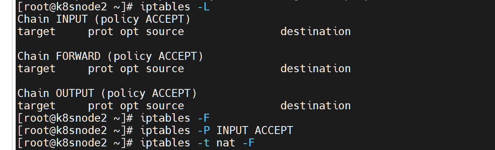
2.8.3 启动并设置chrony开机自启
# 开机自启chrony服务
systemctl enable chronyd
# 重启chrony服务使配置生效
systemctl restart chronyd
# 启用系统NTP同步
timedatectl set-ntp yes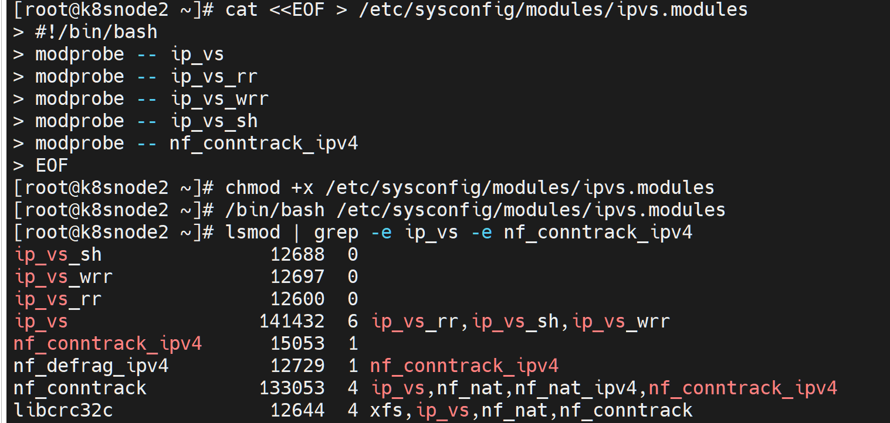
2.8.4 验证时间同步状态
# 查看系统时间同步状态
timedatectl status
# 查看chrony时间源同步状态
chronyc sources✅ 验证结果：
- timedatectl status中NTP service显示active；
- chronyc sources中k8smaster前显示*（主同步源）或+（备用同步源），即为同步成功。
2.9 安装Docker（与Master版本一致）
2.9.1 安装Docker依赖包
yum install -y yum-utils device-mapper-persistent-data lvm22.9.2 配置阿里云Docker镜像源
yum-config-manager --add-repo http://mirrors.aliyun.com/docker-ce/linux/centos/docker-ce.repo2.9.3 安装指定版本Docker-CE
安装与K8s 1.23.0兼容的20.10.24版本，避免版本冲突：
yum install --setopt=obsoletes=0 docker-ce-20.10.24-3.el7 -y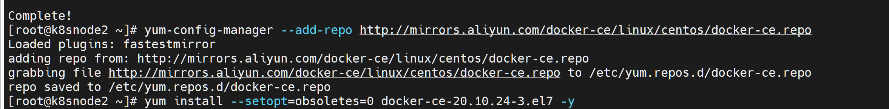
2.9.4 配置Docker核心参数
修改Docker cgroup驱动为systemd（与K8s一致），配置国内镜像源加速：
# 创建Docker配置目录
mkdir -p /etc/docker/
# 编辑Docker守护进程配置文件
vim /etc/docker/daemon.json添加以下配置内容：
{
"exec-opts": ["native.cgroupdriver=systemd"],
"registry-mirrors": ["https://docker.1ms.run"]
}2.9.5 启动并启用Docker服务
# 重新加载系统守护进程
systemctl daemon-reload
# 重启Docker+开机自启+查看状态
systemctl restart docker && systemctl enable docker && systemctl status docker✅ 验证结果：Docker状态显示active (running)，执行docker -v显示版本为20.10.24，即为安装成功。
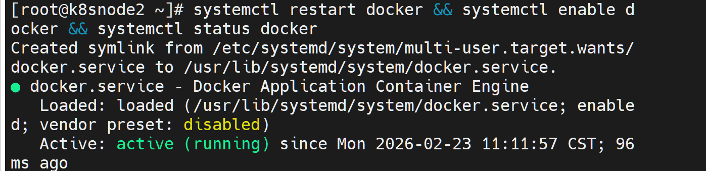
2.10 安装K8s核心组件（与Master版本一致）
2.10.1 配置阿里云K8s YUM源
vim /etc/yum.repos.d/kubernetes.repo添加以下配置内容：
[kubernetes]
name=kubernetes
baseurl=http://mirrors.aliyun.com/kubernetes/yum/repos/kubernetes-el7-x86_64
enabled=1
gpgcheck=0
repo_gpgcheck=0
gpgkey=http://mirrors.aliyun.com/kubernetes/yum/doc/yum-key.gpg
http://mirrors.aliyun.com/kubernetes/yum/doc/rpm-package-key.gpg2.10.2 安装K8s 1.23.0核心组件
yum install kubeadm-1.23.0 kubelet-1.23.0 kubectl -y2.10.3 设置kubelet开机自启
systemctl enable kubelet.service2.11 加入K8s集群（关键步骤）
2.11.1 获取集群加入命令
在Master节点执行以下命令，生成Node节点加入集群的命令（有效24小时）：
kubeadm token create --print-join-command执行后会输出类似如下命令（复制完整命令，在Node节点执行）：
kubeadm join 192.168.126.132:6443 --token xxxxxxxx.xxxxxxxx --discovery-token-ca-cert-hash sha256:xxxxxxxxxxxxxxxxxxxxxxxxxxxxxxxxxxxxxxxxxxxxxxxx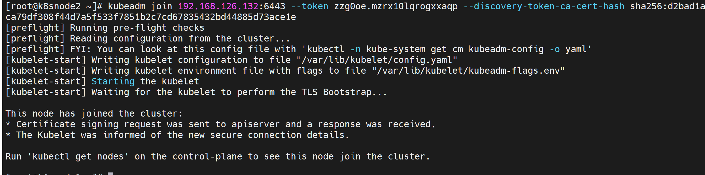
2.11.2 在Node节点执行加入命令
将Master节点生成的join命令，在Node节点直接执行，等待加入完成。
2.12 验证Node节点加入状态
在Master节点执行以下命令，查看集群节点状态：
kubectl get nodes✅ 最终验证结果：
- 输出结果中包含k8snode1、k8snode2节点；
- 节点状态最终变为Ready（需等待1-2分钟，Flannel网络同步完成）；
- 满足以上条件，即为K8s Node节点配置完成，可参与集群Pod调度。
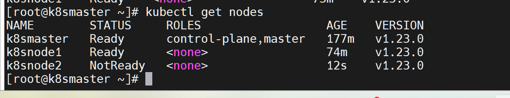
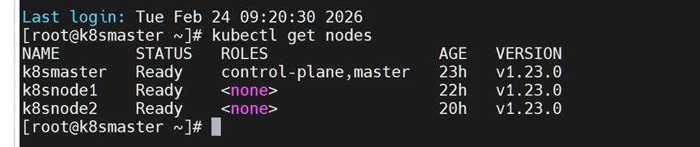
本阶段成果
完成 Node 节点基础配置、时间同步、IPVS 与 kubelet 环境准备，并成功加入 K8s 集群，形成可调度的工作节点。